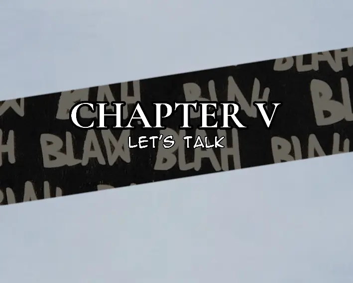

It was night.
A woman sat beside a bed on a wooden chair, her presence lending a little warmth to the darkness of the small room. She was beautiful in a way that had little to do with appearance alone. There was kindness in her eyes, warmth in her smile, and something deeply comforting in the way she looked at the little boy tucked beneath the blankets.
The boy stared at her through sleepy eyes.
"Mom," he murmured.
"Yes, little one?"
"Can you tell me a story?"
The woman smiled.
"Of course."
She leaned forward and pulled the blanket higher, making sure it covered his shoulders before brushing a stray lock of hair from his forehead.
"Alright, little one," she whispered. "I have a story for you."
The room was dimly lit by a single candle on the small table beside the bed. Its flame cast long, wavering shadows across the walls, making the furniture appear to shift whenever the wind slipped through the open window.
A sudden gust swept into the room.
The flame bent violently to one side, and the curtain fluttered against the wall. For a moment, the candle threatened to surrender to the darkness before recovering its balance.
Outside, the night was anything but peaceful.
The laughter of drunk men echoed through the streets. Someone shouted something unintelligible, prompting another voice to answer with a burst of laughter. Glass clinked somewhere nearby. Footsteps passed beneath the window, followed by the distant roar of a vehicle disappearing into the night.
The boy barely noticed any of it.
He was waiting for his story.
His mother settled back into her chair, folded her hands in her lap, and regarded him with a small smile.
"Once upon a time," she began, "there was a kingdom..."
The boy's eyes widened slightly.
"A kingdom?"
"Yes."
"Was it a nice kingdom?"
His mother paused, as though the question required more thought than it should have.
Then she smiled.
"It was supposed to be."
The boy frowned.
"What happened?"
The woman glanced towards the window. The curtain stirred again, its shadow stretching across the wall.
"Well," she said, turning back to him, "that is where our story begins."
She took a quiet breath.
"It is said that the rich are never kind to you until you become one of them."
The boy watched her expectantly.
"There was once a wealthy family known as the Vandenhills. They owned a magnificent estate in Helen's Fields, perched high upon a place called Vanden Hill. Their home was enormous, with more rooms than anyone could reasonably need, more servants than the family could remember by name, and enough money flowing through their businesses to keep their descendants comfortable for generations."
She paused.
"Or so one might think."
The boy pulled the blanket closer to his chin.
"But within that beautiful estate lived a woman who was greedy to the bone."
His eyebrows drew together.
"Was she a witch?"
His mother gave a faint smile.
"Some people called her one."
The boy seemed satisfied with that answer, though he watched her a little more carefully now.
"Her name was Marrian Vandenhill."
The woman let the name linger for a moment before continuing.
"Marrian was the sort of woman who wanted everything. Not some of it, nor even most of it. Everything. She wanted the estate, the businesses, the money, and the power that came with the Vandenhill name."
She leaned forward slightly.
"But above all else, she wanted her husband's fortune."
"Her husband was Henry Vandenhill, a man who was almost her complete opposite. He was gentle, kind, and bold enough to trust people even when they gave him every reason not to. He possessed the unfortunate habit of seeing goodness in others, including those who had very little of it to offer."
The woman glanced at the boy.
"And despite knowing what kind of woman Marrian truly was, Henry loved her."
The boy frowned.
"Why?"
His mother shrugged.
"Love doesn't always make sense."
She allowed that answer to settle before continuing.
"Together, Henry and Marrian had two sons. You might imagine that having a family would have been enough for her, but Marrian was not interested in what she had. She was interested in what else she could acquire."
The candle crackled softly.
"And eventually, she decided that waiting for Henry to die naturally was taking far too long."
The boy's eyes widened.
His mother continued as though she had just mentioned an ordinary inconvenience.
"One evening, she prepared him a meal."
"What was in it?"
"Something very poisonous."
The boy sat a little higher beneath the blanket.
"Marrian watched as Henry ate the food she had prepared. He had no reason to suspect that his own wife intended to kill him, and so he ate without hesitation. Before long, the poison began to take effect."
The woman paused, her gaze briefly settling on the candle.
"But there was something Marrian didn't know."
The boy leaned closer.
"What?"
"Henry already knew what kind of woman she was."
The boy stared at her in disbelief.
"Then why did he marry her?"
His mother considered the question.
"Because knowing someone's darkness doesn't always make you stop loving them."
She looked down at her folded hands for a moment before continuing.
"Henry knew that Marrian wanted his fortune. He knew she might one day try to take everything from him. And because he understood what could happen, he made preparations of his own."
The boy's eyes followed her as she leaned forward.
"Before he died, Henry wrote a will."
"A will?"
"Yes. A document that explains what should happen to your possessions after you die."
"Oh."
"And Henry had made his decision. He would leave everything to his son."
The boy smiled.
"Which son?"
His mother paused.
"Neither of the two sons Marrian knew about."
The smile vanished from the boy's face.
"Henry had another son?"
"Yes. A boy named Raymond Vandenhill."
The room seemed to grow quieter as his mother spoke the name.
"Marrian discovered the truth after Henry's death, and she was furious. Who was this boy? Where had he come from? Why had Henry kept his existence a secret from her?"
She shook her head.
"Most importantly, how was she supposed to inherit everything if Raymond was still alive?"
The boy's expression had become serious.
"What did she do?"
"She searched everywhere. She questioned servants, business associates, friends, and anyone who might have known something about Henry's private affairs. She demanded answers from people who had none and threatened those who seemed to know more than they were willing to say."
The woman paused.
"But no one could tell her where Raymond was."
She leaned closer to the boy.
"So Marrian did what greedy people often do when money is involved."
"What?"
"She hired men who were willing to kill for it."
The boy swallowed.
"Lots of men," his mother added.
"Men who had no particular interest in justice, nor any affection for the dead Henry Vandenhill. They cared about the money Marrian promised them, and that was more than enough to secure their loyalty."
Her voice lowered.
"She gave them one instruction."
The boy held his breath.
"Find Raymond."
She waited a moment before delivering the final words.
"And kill him."
For a few seconds, neither of them spoke.
"Marrian didn't know what Raymond looked like. All she knew was that he was younger than four years old. So she gave the men his name and sent them into Helen's Fields to search for him."
The boy's fingers tightened around the edge of his blanket.
"And somewhere in that same city," his mother continued, "a woman was running through the darkness with a little boy."
She looked at him.
"Raymond."
The boy stared back at her, completely absorbed in the story.
"His mother knew the men were coming. She knew that if they found her son, they would kill him. There was no time to explain anything, no time to gather their belongings, and certainly no time to wait for someone to come to their rescue."
The woman drew the blanket a little closer around the boy's shoulders.
"So she ran."
"Through the streets, past houses with their doors firmly shut and windows glowing with the light of other people's peaceful evenings. She kept moving, holding Raymond's hand tightly as she searched for somewhere, anywhere, they might hide."
"She ran until she found a van parked along the road."
The woman lowered her voice to a whisper.
"Then she opened the back."
"'Get inside,' she told Raymond."
"The little boy climbed into the back of the van, frightened and confused. His mother followed him, closed the door, and drove away into the night."
His mother fell silent.
For a moment, the only sound in the room was the faint crackling of the candle.
Then she looked down.
The little boy was asleep.
His eyes had closed somewhere along the way, and his breathing had settled into a slow, steady rhythm. One hand still clutched the blanket, while a faint snore escaped him every few seconds.
The woman regarded him with an affectionate smile.
"You always fall asleep before the interesting part."
She reached over and gently tucked the blanket around his shoulder.
Then she rose from her chair.
Another breeze slipped through the open window, making the candle flame tremble. The woman crossed the room and closed the window, shutting out the distant laughter and the restless sounds of the street.
When she turned back, the boy had not moved.
She stood beside the bed for a moment, looking down at his sleeping face. Whatever thoughts passed through her mind remained her own.
At last, she smiled.
"Goodnight, little one."
She blew out the candle.
Darkness swallowed the room, leaving only the faint outline of the bed and the sleeping child beneath the blankets.
The woman walked to the door and rested her hand on the handle. Before leaving, she glanced back one last time.
The boy slept peacefully.
With a quiet smile, she closed the door behind her.


Raymond sat on the edge of his bed, a book resting in his hands, while Arabella Cavendish lay stretched across the mattress behind him.
Her dress was bloody.
Unfortunately, so were his grey bedsheets.
The room was quiet, though not particularly peaceful. There is a difference between the two, as anyone who has ever shared a room with someone they suspect might be planning their murder will understand. Silence, after all, can mean many things. Sometimes it means comfort. Sometimes it means anger. And sometimes it means two people are mentally rehearsing conversations neither intends to have honestly.
Raymond suspected the latter.
He sat with his back straight, his attention apparently devoted to the book in his hands. Arabella lay behind him, looking entirely too comfortable for someone who had arrived in his life wearing a bloodstained dress. Neither had said much since settling into the room, and the silence had begun to acquire the uncomfortable quality of an unfinished argument.
Raymond glanced at the bedsheets.
Grey.
The dress had stained them rather conspicuously, introducing a shade of red that his bedroom's carefully maintained colour scheme had never requested.
He looked back at his book.
There were several questions he could ask Arabella. The most obvious concerned the blood. The second concerned the circumstances that had brought her into his bedroom in the first place. The third, which was arguably the most important, concerned what exactly she expected him to do about either situation.
Unfortunately, Raymond had never found that knowing the right questions made asking them any easier.
Behind him, Arabella was conducting an inspection of her own.
"Your room has a nice aesthetic."
Raymond turned a page.
"Grey here, grey there," she continued, her gaze wandering over the walls and furniture. "You've even got a plant next to the window. And a wooden ceiling."
She looked upwards, considering it.
"It's like good and bad decided to live under the same roof."
"I'm into peace," Raymond replied.
It was a simple explanation, delivered with the solemnity of a man who had been asked to defend his interior decorating choices in court.
Arabella turned her head towards him.
"Yeah. I noticed that, Mike."
She said it with a remarkably nonchalant expression, as though she hadn't just compared his bedroom to a philosophical disagreement between architectural materials. Her eyes remained on him, however, and there was something in the way she watched him that suggested the conversation was not nearly as innocent as she wanted it to appear.
Raymond kept reading.
Or, at least, he maintained the appearance of reading. The distinction was important.
He could feel her attention on him, steady and unhurried. Arabella had a talent for making a person conscious of her presence without doing anything that could reasonably be called threatening. She simply looked at them until they began to wonder what she was thinking.
Raymond had no intention of asking.
After another moment, he lowered his book slightly.
"Were you wearing that dress for a special occasion," he asked, "or was it for some sort of date?"
Arabella's lips curved into a smile.
"I was wearing it for you."
Raymond looked at her.
"When you rescued me, I thought it would be romantic. I had to wait for you for a while, though, so the whole thing lost some of its charm."
She sighed, looking almost disappointed by the failure of an otherwise promising evening.
"Honestly, Mike. A girl gets herself into trouble, waits for her handsome rescuer, and what does she get? Delays. Blood. No romance whatsoever."
Raymond stared at her for a moment before returning his attention to the book.
"Mike..."
"Yes?"
"You can stop calling me Mike, Bella."
"Ah, no." Arabella's answer came immediately. "I like Mike."
"Why?"
"It sounds more manly."
"It's a name."
"Exactly. A very manly name."
Raymond turned another page, apparently deciding that further discussion would only encourage her.
It was a mistake.
Arabella shifted on the mattress. The bedsheets rustled beneath her, followed by the faint sound of fabric dragging across the bedding. Before Raymond could determine what she was doing, she rose from the bed and moved behind him.
Then she wrapped her arms around his waist.
Her embrace was casual enough to suggest familiarity and deliberate enough to make that familiarity questionable. She rested against his back, her arms folded around him as though she had every right to be there.
Raymond went still.
Not dramatically. He didn't drop the book, gasp, or attempt to escape. He simply stopped turning the pages.
Arabella rested her cheek against his back.
"And besides," she murmured, "Mike seems attracted to crime and danger."
"Does he?"
"Oh, absolutely. Look at the company he keeps."
Raymond glanced down at her arms around his waist.
Then he looked at the book again.
"What is it that you want?"
The question was quiet, direct, and considerably less amused than anything he had said before.
Arabella lifted her head.
"I want you."
She tapped his shoulder, as though she had just reminded him of something he had forgotten, then released him and returned to the bed.
Just like that.
One moment she was holding him; the next, she was lying across his mattress again, apparently satisfied with the exchange. Raymond remained seated on the edge of the bed, the book open in his hands and his expression giving away very little.
Arabella settled against the pillows.
For a while, she looked around the room again, taking in the muted colours, the wooden ceiling, and the small plant beside the window. Beyond the glass, the world continued with whatever business it had been conducting before she arrived. Inside, the room remained still.
"This place is peaceful," she said.
There was something different about her voice now. The teasing had softened, leaving behind a quieter observation.
"It's safer than being out there."
She looked towards the window, though whether she was thinking about the world outside or the trouble she had left behind was difficult to say.
"It's almost like I could run away in here. Be a little girl again. Break things by accident, throw tantrums, behave like a complete brat..."
She turned her face towards Raymond.
"As you call me."
A small smile appeared on her lips.
"A brat you adore."
Raymond remained where he was, his book still open.
Arabella watched him, and for once, she seemed content to let the silence remain between them. Whether her words were a genuine confession, another attempt to provoke him, or simply a mixture of the two was a question she had no intention of answering.
Then again, Arabella had never been particularly generous with straightforward answers.
And Raymond, unfortunately for his bedsheets, had allowed her into his room.
"Tell me something."
Raymond closed his book, placed it on the bed, and rose slowly to his feet. He turned to face Arabella, who was still lying among his pillows with the comfort of a woman who had paid for the furniture and intended to get her money's worth.
"Oh, what is it, Daddy?"
Raymond looked at her.
There were moments when he genuinely wondered whether Arabella had been born this way or had simply spent years refining the art of being insufferable. Either possibility was equally concerning.
"How did you find our van?" he asked. "And where is our driver?"
Arabella's smile widened.
"You know, it's very boring to reveal your cards in a game like this, Mike." She tilted her head, studying him. "What do I gain by telling you everything so quickly?"
"Perhaps the satisfaction of answering a simple question."
"Where's the fun in that?"
She sat up, reached for the book Raymond had abandoned on the bed, and pulled it towards herself. Opening it, she glanced over a few pages with the air of someone who had suddenly developed a profound interest in literature.
Raymond watched her.
Arabella turned another page.
"Last time I heard," he said, "you were rather fond of death games. Blood, screams, and tears, all courtesy of a snake."
She stopped reading.
For a moment, she simply looked at him. Then her face brightened with genuine delight.
"Aw. You understand me." She pressed the book against her chest. "I'm flattered."
She put it down and swung her legs over the side of the bed.
"I got the van from Adultery," she explained, rising to her feet. "And I must say, when you carried me, I almost felt like a knight had come to rescue his princess."
She paused, pretending to consider the memory.
"Although, for a moment, I thought you might have your way with me."
Raymond's expression remained unchanged.
Arabella looked mildly disappointed by the absence of a more entertaining reaction. Evidently, she had expected at least a raised eyebrow. Perhaps a stammer. In an ideal world, a complete loss of composure would have been preferable, but Arabella had learned to work with what she was given.
She began walking towards him.
"I've always imagined you as the sort of man who wears suits every day," she said.
Her eyes travelled over him before she reached out and touched his chest, smoothing her hand over the fabric as though checking whether her theory might yet prove correct.
"Very proper. Very serious. The kind of man who probably has an opinion about how people should fold their napkins."
"You play a lot of childish games, Bella."
Raymond stepped back, putting a little distance between them.
"You will not be getting any wine today. You should reflect on your actions."
Arabella blinked.
Then she laughed.
"Wine? You're punishing me with wine?"
"I'm sure you'll survive."
"How cruel, Mike. Truly. I come into your life, bring excitement into your dull little room, and this is how you repay me."
"You brought blood into my bedroom."
"An unfortunate detail."
"On my bedsheets."
"An even more unfortunate detail."
Raymond regarded her for a moment.
Arabella smiled sweetly.
Neither appeared particularly interested in apologising.
"I'm quite sure you know your way out of my room," Raymond said at last, gesturing towards the door.
Arabella glanced at it.
Then she looked back at him.
"Oh, yes. I know my way out, Mike."
She walked past him, only to veer away from the door and head towards the window instead.
Raymond watched her approach it.
"Bella."
She turned her head.
"What?"
"The door is that way."
"I know."
"Then why are you going towards the window?"
"Because, Daddy, doors are terribly ordinary."
She reached the window and placed a hand on the frame. A moment later, she looked over her shoulder at him, her smile returning with the sort of confidence usually reserved for people who had never seriously considered the consequences of their decisions.
"I'm looking forward to our date on Friday."
Raymond's expression tightened almost imperceptibly.
"Who said anything about a date?"
Arabella was already climbing onto the windowsill.
"You did."
"I most certainly did not."
"Then I suppose I'll have to remind you on Friday."
Before Raymond could offer a response, she slipped through the open window and disappeared outside.
For a brief moment, he stood perfectly still.
They were on the second floor.
Arabella, apparently, had either forgotten this fact or regarded gravity as a minor inconvenience that sensible people ought to learn to negotiate.
Raymond crossed the room and approached the window.
Below, Arabella landed in the yard with the ease of someone who had either practised such stunts before or possessed a remarkable disregard for the future medical expenses associated with them. She straightened her dress, brushed herself off, and continued walking as though she had just descended a staircase.
Raymond watched her cross the yard.
She never looked back.
Of course she didn't.
Arabella Cavendish was the sort of woman who could leave through a second-floor window, announce a date nobody had agreed to, and depart with the satisfaction of someone who believed the entire evening had gone according to plan.
Raymond rested one hand against the window frame.
His bedsheets were stained. His questions remained unanswered. His driver was missing, and Arabella had apparently appointed herself the organiser of his Friday evening.
He looked down at the yard once more.
Then he shook his head and stepped away from the window.
There were, he reflected, many kinds of trouble in the world.
Some arrived with guns. Others came with knives.
And then there was Arabella Cavendish, who arrived in a bloodstained dress, stole your peace, and left you wondering whether you had somehow agreed to dinner.
Thirty Minutes Later
Raymond was finally at peace.
Arabella Cavendish had departed, taking her bloodstained dress, her questionable manners, and whatever remained of his patience with her. His bedroom had regained some semblance of order, and he could once again devote his attention to something considerably more productive than arguing with a woman who treated windows as doors and other people's lives as recreational activities.
Hugo Cavendish, for instance.
Raymond sat in his room, investigating the most efficient way to kill the man. It was the sort of work that required concentration, a clear head, and preferably an absence of Arabella Cavendish.
He had just begun making progress when the unmistakable roar of loud motorcycles entered the yard.
Raymond raised his head.
Then he closed whatever he had been reading, rose from his chair, and left his room without hesitation.
Outside, Alex had arrived with Chad, one of the Kingsbat men. They had brought a truck carrying the van, which was now being driven towards the backyard where the delivery vehicles were parked.
It was a part of the property Raymond and Alex rarely visited. Max managed the place personally, overseeing the operations with the assistance of a team that monitored everything digitally, from the goods entering the premises to the vehicles leaving with them. Whatever happened back there was generally handled without requiring the presence of the people who owned the house.
There were, after all, advantages to having people whose job was to worry about things for you.
The truck disappeared towards the delivery area, leaving Alex standing outside the front of the house. Gravel crunched beneath her shoes as she watched the vehicle go.
A moment later, a young man in a suit emerged from the backyard. He approached her carrying a piece of paper and a pen, wearing the earnest expression of someone who had been entrusted with an important task and intended to complete it without complications.
He stopped in front of her.
"Good afternoon, ma'am. Max asked me to give you this."
He handed her the paper.
Alex accepted it and began reading. Her eyes moved across the page, her expression changing very little as she took in whatever information Max had decided was worth putting in writing.
When she finished, she lowered the paper.
The young man was still standing beside her.
Alex looked at him.
"What are you looking at?"
The young man straightened.
"Um... oh. I'm waiting for an answer, ma'am."
Alex regarded him for a moment, then stepped closer and casually draped an arm around his shoulders. The gesture was almost affectionate, which was unfortunate for him because experience had probably taught him that being approached by his superiors was rarely a reason to celebrate.
"Can you see that mountain over there?" she asked.
The young man followed her gaze.
Beyond the backyard, visible from where they stood, a mountain rose in the distance. It was the sort of landmark one might have admired if one had been visiting the property for its scenery rather than working there.
"Yes," he replied cautiously. "Yes, ma'am. I can see it."
Alex nodded.
"Yeah. Good boy."
She removed her arm from his shoulders.
"Now fuck off."
The young man blinked.
For a brief moment, his face suggested that he was attempting to reconcile the instructions he had received with the instructions he had just been given.
"Um... what?"
Alex turned towards him.
"Would you like me to behead you?"
"No, ma'am."
"Then why are we still having this conversation?"
The young man immediately stepped back.
"Have a nice day, ma'am."
He departed with admirable speed, carrying neither a reply nor any further questions about the mountain.
Alex watched him go.
There were people who believed a successful working environment depended on communication, mutual respect, and the careful management of interpersonal relationships. Alex had never been particularly interested in testing that theory. In her experience, a well-timed threat could accomplish in five seconds what a meeting might struggle to achieve in an hour.
She folded the paper and headed inside.
By the time she reached the entrance hall, Raymond was already waiting near the staircase.
He stood with the composure of a man who had spent the past thirty minutes doing something perfectly ordinary by his own standards and deeply concerning by those of most other people.
Alex took one look at him.
"I see you're looking rather riled up by that Cavendish psycho."
"More like she got the van from a man named Adultery, who was hired by DizzyDean to get rid of it."
Alex stopped walking.
"Adultery?"
"That's what she said."
"And DizzyDean?"
"Apparently involved in the arrangement."
Alex considered this for a moment.
There were many things she disliked about the situation, not least the fact that their van had somehow become an object of interest to people who seemed to have nothing better to do than interfere with other people's business. The names themselves were hardly reassuring. Adultery sounded like a man who had made a questionable career choice, while DizzyDean sounded like someone who had either a medical condition or an unfortunate sense of branding.
Neither possibility inspired confidence.
"I'm guessing we're going to your room to discuss business," she said, resuming her walk towards him.
"It seems so."
Alex passed him and started towards the stairs.
"It's nice to see you so interested in business these days," she remarked. "You'll be taking over very, very soon, and I'll finally get my freedom."
Raymond fell into step beside her.
"Freedom will be your downfall."
Alex glanced at him.
"Excuse me?"
"You heard me."
She gave a short laugh.
"That's a lovely thing to say to the woman who has spent years keeping you alive."
"I never asked you to."
"And yet, here we are."
They continued up the stairs, their footsteps echoing through the house.
Alex shook her head, though there was a faint smile on her face.
"One day, Raymond, I'm going to retire somewhere quiet. No businesses, no troublesome men, no people named Adultery, and certainly no one who thinks threatening my freedom is an acceptable way to express gratitude."
"Sounds peaceful."
"It will be."
"Then I suggest you start preparing for disappointment."
Alex looked at him again.
Raymond, naturally, had already returned to thinking about Hugo Cavendish.
Somewhere between the van, Adultery, DizzyDean, and Arabella's impending Friday date, the afternoon had developed an unreasonable number of complications. And as far as Raymond was concerned, the sooner they dealt with them, the sooner he could return to the matter that interested him most.
Hugo was still alive.
That, at least, was a problem he intended to solve.
"Did you just quote a line from a book?"
Alex stood outside Raymond's bedroom, looking at him with an expression caught somewhere between suspicion and amusement.
"I just made it up."
Raymond opened the door and stepped aside to let her in.
Alex regarded him for another moment, a small smirk forming at the corner of her mouth.
"Gentle, too. Tell me, Raymond, did you do what I think a guy does with another woman?"
Raymond gave her a look.
"If I had, you wouldn't be in my room right now."
He followed her inside and closed the door.
Alex laughed under her breath.
"Good Lord. The boy is growing up."
"I'm standing right here."
"I'm aware."
She wandered further into the room, looking around as though she expected to discover evidence of a romantic catastrophe among the grey furniture. Finding nothing particularly interesting, she turned back to him.
"So, what is it you wanted to discuss?"
"I've decided I'm going to kill Hugo."
Alex's amusement faded just enough to suggest that she was listening properly now.
"That is very fast, don't you think? If it were that easy, Lucille would have done it herself."
Raymond remained standing near the door.
"Yeah. You're right."
He paused, considering the matter.
"We've got our van back, but DizzyDean still needs to be confronted. He kept it there, even though it was making a delivery to his premises."
"That's something I'll investigate," Alex replied.
Raymond looked at her.
"Nice to see you're interested."
"Don't sound so surprised. I do occasionally work."
"Occasionally?"
"Careful, brother."
She pointed a finger at him, though her expression suggested she was enjoying herself far too much to make the threat convincing.
"Besides, I suspect the van and Hugo aren't the only reasons you wanted to talk to me."
Raymond waited.
Alex folded her arms.
"You also wanted to discuss the fact that you're a Vandenhill asshole."
He exhaled quietly.
"Yes. That."
For once, Alex didn't immediately follow the remark with another joke.
Raymond moved away from the door and stood beside the bed. His gaze drifted towards the window, beyond which the afternoon light fell across the grounds.
"Mom knows something," he said. "I know we can't risk asking her about it in our current situation."
Alex watched him.
"Why do you care so much? It's not as though I care about any of it."
"Because if the Vandenhills discover I'm alive, they'll hunt me down and kill me."
He said it matter-of-factly, without raising his voice or allowing the words to carry any more weight than necessary.
It was one of Raymond's more inconvenient qualities. He could discuss his own potential murder with the same composure another man might reserve for discussing the weather.
Alex waved a hand dismissively.
"Raymond, we have the Kingsbat, guards all over the place, and enough security to make this house more difficult to enter than a bank vault. We're safe as ovaries, brother."
Raymond slowly inhaled.
Then he exhaled.
He looked at her.
"Language."
Alex stared back at him.
"Yeah, we're not doing that here."
"Doing what?"
"Pretending you have the authority to tell me how to speak."
"I was making a suggestion."
"And I was rejecting it."
Raymond accepted this with the weary expression of a man who had long ago discovered that arguing with Alex was an investment with consistently disappointing returns.
"I just want to know about my past," he continued. "And the debt Father owed the Hatters."
Alex's expression changed slightly.
"You know Boras Hatter is dead, right?"
"I do."
"Then why are you still concerned about the debt?"
"Because his legacy didn't die with him."
Raymond turned to face her fully.
"And I don't know how any of this connects to Lucille's employer."
For a moment, the two of them looked at each other.
There was no teasing now, no playful insult to soften the conversation. Only the uncomfortable recognition that several pieces of a puzzle they had been examining separately might belong to the same picture.
Alex was the first to speak.
"I think we know now."
Raymond's eyes remained on hers.
"Yes," he said. "Her employer is a Hatter."
The name settled between them.
Boras Hatter was dead, but whatever he had built had evidently survived him. Debts, loyalties, grudges—such things had a remarkable talent for outliving the people who created them. Money was particularly good at it. Money could be buried with a man, inherited by his children, stolen by his enemies, and still somehow find its way back into a conversation years later.
Raymond had no intention of leaving this particular conversation unfinished.
Unfortunately, Alex appeared to have reached the limit of her patience for the afternoon.
She straightened and glanced towards the door.
"Well, I need to go and do some business shit at the Sosadium. We've got these crazy pills being developed, and I need to see what's happening with them."
Raymond raised an eyebrow.
"Let's hope they're not drugs."
"They're not."
"Comforting."
She started towards the door, where Raymond was standing, and stopped beside him.
"And you should ask Max about Father," she added. "I'm sure he knew a lot about him and his sassy debts."
Raymond looked at her.
"His what?"
"His sassy debts. You know, the sort that refuse to stay dead and keep showing up to ruin perfectly good afternoons."
"I'm beginning to understand why you never retire."
"Because the world would collapse without me."
"Of course."
Alex grinned and stepped past him.
Raymond moved aside to let her leave.
She crossed the threshold, then glanced back at him.
"Try not to kill anyone before dinner."
"I'll see what I can do."
"That's all I ask."
With that, Alex departed, leaving Raymond alone in his room with a dead Hatter, a living Hugo Cavendish, a missing history, and a father whose debts appeared to have developed a life of their own.
Raymond looked towards the closed door.
Then he considered what Alex had said.
Max.
If anyone knew something about his father's past, it was probably the man who had spent years managing the family's affairs while everyone else concerned themselves with more immediate problems.
Raymond had questions.
And for once, he knew exactly whom to ask.
Somewhere in Someone's House
Adultery was punching a boy.
The first blow had sent blood spilling from the boy's nose. The second had split his lip, painting his chin red. By the time the third landed, the boy had stopped making any meaningful attempt to defend himself.
Adultery, however, was not finished.
He gripped the boy by the front of his shirt, holding him upright with the casual determination of a man trying to keep an inconvenient piece of furniture from falling over.
"Cuckoldery," he said.
His fist struck the boy's face.
"Lewdness."
Another punch.
The boy's head snapped sideways. His body sagged against Adultery's grip, and blood dripped onto the floor beneath them.
"Unchastity."
Adultery drew his fist back for another blow.
His phone rang.
He stopped.
There are few things more irritating than an interruption when one is in the middle of something important. For Adultery, the definition of important had always been somewhat unconventional.
He released the boy's shirt, allowing him to slump towards the floor, and retrieved his phone.
Arabella Cavendish.
Adultery answered.
"Afternoon."
"Afternoon," Arabella replied, sounding as though she were calling to enquire about the weather rather than interrupting a man's work. "Meet me at Boras Wine Shop. I've got your yellow bills waiting."
Adultery glanced towards the bed.
The sheets were stained with blood. A naked woman lay motionless across them, her body abandoned in an awkward position that suggested she had not been granted the courtesy of choosing how she would spend the remainder of her afternoon.
He looked back at the boy.
The room had become unpleasantly quiet.
"Alright," he said.
He ended the call.
For a moment, Adultery stood still, listening to the silence. Then he slipped his phone into his pocket and reached for a knife.
The boy lay where he had fallen, offering no resistance and making no sound.
Adultery crouched beside him.
What followed was brief.
When Adultery stood again, the knife was in his hand, and the boy was no longer moving.
He wiped the blade, put it away, and looked around the room as though checking whether he had forgotten anything important.
Apparently satisfied, he headed for the door.
Arabella had promised him his yellow bills, and Adultery had never been a man to neglect his finances.
After all, a man's work might be morally questionable, legally indefensible, and occasionally rather messy.
There was no reason for his payment to suffer the same deficiencies.
Max was walking down the hallway towards Raymond's room when he passed a housekeeper carrying a bottle of wine to the gaming room.
The intended recipient was none other than One-Armed John, a man who had somehow managed to build a life remarkably free of problems, provided one excluded PlayStation updates and the insults of other gamers. The latter were a particularly persistent nuisance, owing to John's unfortunate lack of talent. One could only speculate how much better he might have performed had he possessed two functioning arms, although those familiar with his gaming history suspected the problem extended beyond his equipment.
Max watched the housekeeper disappear down the corridor before continuing on his way.
He had business to attend to, and unlike certain residents of the house, he did not consider losing a video game a matter worthy of wine.
He arrived at Raymond's door and knocked.
It was a door he had knocked on so many times that the action had become almost ceremonial. There were people who announced their presence with elaborate greetings, others who barged in without permission, and then there was Max, who continued knocking on a door even though he could probably have predicted the response before his knuckles touched the wood.
"Come in," Raymond called from inside.
Max opened the door and entered.
Raymond stood beside the window, looking out over the grounds.
His clothes appeared to have settled into him after several days of wear, acquiring the comfortable disarray of garments that had long since stopped expecting their owner to make an effort. Beneath a dark brown knitted vest, he wore a white shirt with a slightly creased body and an open collar that rested loosely against his neck. Its sleeves had been pushed unevenly past his wrists, the fabric gathering around his elbows.
The vest itself was thick, its wool showing the faint signs of use. A ribbed band fitted around his waist, while a geometric pattern stretched across his chest and shoulders: bold, saturated-blue diamonds edged with smaller triangles in a paler shade. Against the earthy brown wool, the pattern stood out with an almost surprising richness, as though someone had attempted to introduce a little sophistication into an outfit otherwise committed to indifference.
His trousers were equally unconcerned with appearances. Loose and dark brown, they gathered in heavy folds whenever he moved, their hems settling around his ankles. One hand rested in a pocket, pulling the fabric slightly lower on that side.
His hair was messy, and a trace of stubble shadowed his jaw.
All things considered, Raymond looked like a man who had dressed for his own comfort and considered the matter closed.
Max shut the door behind him.
For a moment, he studied Raymond's back.
Then he cleared his throat.
Raymond turned from the window.
"Max."
"Raymond."
A greeting, brief and efficient. Neither man was particularly inclined to waste words on the obvious.
Max stepped further into the room.
"I understand you've been looking into your father's affairs."
Raymond's expression changed slightly.
"Alex told you?"
"Alex suggested that I might know something about the matter."
"Did she?"
"She also described your father's debts as 'sassy.'"
Raymond closed his eyes for a brief moment.
"Of course she did."
Max's mouth twitched.
There were many things a man could do with the information entrusted to him by Alex. Taking it entirely seriously was rarely the wisest option.
Raymond gestured towards the room.
"Alright, Max. What do you know about my father?"
"You asked for me, sir?"
Max closed the door behind him.
Raymond turned away from the window, his gaze travelling briefly across the room before settling on Max.
"Did you know this house has been standing for more than fifty years?"
"I did, sir."
"Remarkable, isn't it? Fifty years, and it's still standing as though time has had the good manners to leave it alone."
Max glanced towards the window.
"It has been well maintained."
"I'm sure it has." Raymond paused. "My father was a busy man. He loved his work, loved his family, and adored my mother more than anything else in the world. He would have cut off his own hand for her, if necessary."
"Indeed, sir."
"But he was also rather good at keeping secrets from everyone, wasn't he?"
Max studied him. There was a particular way Raymond asked questions when he already suspected the answers. He did not rush, did not raise his voice, and rarely bothered to dress an accusation in the polite clothing of a question. He simply left the words between himself and the other person, allowing the silence to do what it pleased.
"I agree, sir," Max said.
Max had been part of the family for more than forty years. In that time, he had learned the habits, weaknesses, and private peculiarities of its members, often knowing more about them than they knew about him. He had watched children grow, witnessed the rise and fall of tempers, and remained present through the sort of family troubles that made ordinary domestic disagreements seem like pleasant afternoon entertainment.
He was, in short, precisely the sort of man one ought to recruit as an enemy of the Kazersdales.
Fortunately for Raymond, Max had chosen a different occupation.
"Vandenhills," Raymond said.
The name settled into the room.
For a moment, neither man spoke.
Raymond moved away from the window, his expression unreadable. "What do you know about my father's debts? The Hatters, the Vandenhills. All of it, Max."
Max drew a slow breath.
"The Hatters helped your father when he was facing a crisis. It was during the time your stepmother, Marrian Vandenhill, wanted you dead."
Raymond's face remained still, though his attention sharpened.
"Your father knew there were people who would do anything to please her. He was afraid they would find you, so he went to the Hatters and asked them to protect you. He wanted them to take care of anyone who came looking to kill you."
"And they agreed?"
"They did."
"Out of kindness?"
Max looked at him.
"No, sir."
Raymond gave a faint nod. He had not expected kindness to enter the conversation, but it was always worth allowing people the opportunity to disappoint you with their answers.
"The Hatters did not want money as payment," Max continued. "They wanted something equivalent in return. A similar payment."
"Meaning?"
"A payment of blood."
The words seemed to diminish the room around them.
Outside, the grounds remained quiet. Somewhere beyond the walls, the household continued with its ordinary business, blissfully unaware that the past had just arrived to collect its overdue account.
Raymond lowered his gaze for a moment.
"I understand."
He looked up again.
"Is Marrian still alive?"
"Yes, sir. She is."
"And she still believes I'm dead?"
"As far as I know, she does. The Vandenhills do not believe you survived."
Raymond's mouth tightened into something that was not quite a smile.
"That explains a few things."
"Sir?"
"Mother made Alex the CEO of Sosadium instead of me. I wondered why."
Max waited.
"If the Vandenhills discovered I was alive, they would come looking for me. Putting me in charge would have made me considerably easier to find." Raymond glanced towards the window again. "Alex, on the other hand, is a perfectly acceptable distraction."
It was a rather uncharitable description of his sister, although Alex herself might have considered it a compliment.
"Your mother was protecting you, sir," Max said.
"Perhaps." Raymond paused. "Though I suspect she was protecting more than just me."
He let the thought sit for a moment before turning back to Max.
"There's something else I don't understand. Why would a Hatter want Hugo Cavendish dead?"
Max's brow furrowed slightly.
"You believe the Hatters are involved in what is happening to Mr Cavendish?"
"I believe Lucille's employer is a Hatter. I believe my father owed them a debt, and I believe Hugo's name has somehow found its way into the same business. What I don't understand is why." Raymond tilted his head. "It's an odd arrangement, wouldn't you agree?"
"I wish I knew the answer, sir."
"So do I."
Raymond fell silent, considering the connections. His father had borrowed protection from dangerous men to save his son. His stepmother had wanted him dead. The Hatters had demanded blood in exchange for their services. And somewhere in the middle of all that, Hugo Cavendish had become a target.
There were too many unanswered questions for coincidence to be a satisfactory explanation.
At last, Raymond gestured towards the door.
"You may leave, Max."
Max inclined his head.
"One more thing," Raymond added.
Max stopped.
"Keep a close eye on the van. From now on, every driver needs a gun licence."
"Understood, sir."
"I don't want another vehicle disappearing, nor do I want someone delivering our property to whoever happens to ask nicely."
"I concur, sir."
Max opened the door, stepped into the hallway, and closed it behind him.
Raymond remained standing for a few seconds, listening to the fading footsteps.
Then he crossed the room and sat on the edge of the bed.
He exhaled.
For a while, he did nothing else.
Fifty years of family history, forty years of Max's loyalty, a dead man whose debts were still alive, and a woman who believed she had successfully buried a son who was now planning to murder her former husband's associate.
It was a great deal to inherit.
And Raymond had not even received a birthday card.
A knock sounded at the door.
Raymond glanced towards it.
"Come in, Max," he called.
The door opened, but the footsteps that followed were not Max's.
They were sharper, more deliberate: the unhurried click of heels against the floor, each step announcing its owner before she appeared. Whoever it was had apparently decided that knocking was an optional courtesy, best reserved for people who needed permission to enter.
Lucille stepped inside.
She was tall, her heels adding a little more height to a figure that already carried itself with authority. Her black suit trousers were tailored to a clean, sharp line, falling straight from her hips to her ankles and just brushing the tops of her shoes. A plain black leather belt circled her waist, its dull metal buckle catching the light once before disappearing into darkness again.
Her black shirt was loose and slightly rumpled, its collar open and its sleeves pushed back past her forearms, as though she had no time for the inconveniences of formality. Her black hair was tied into a ponytail, and a single dark stud sat in one ear.
Everything she wore was black. She moved like a shadow that happened to have a pulse, her shirt shifting with each stride while her trousers stubbornly maintained their crease. Her heels never hurried. Each step landed with the certainty of someone who had already decided where she intended to stand.
Raymond watched her enter without showing the slightest reaction to the unexpected visitor.
"Take off your clothes. We need to talk," Lucille said.
She sat on his bed as though she had just asked him to pass the salt.
Raymond regarded her for a moment.
"I didn't know you liked talking to people naked."
"I'm choosy."
"I'm beginning to understand that."
Raymond settled onto the bed, then glanced towards the bookshelf.
"Pour me a drink."
Lucille looked at him, a faint smile appearing on her face. She had already noticed the wine bottle and the two glasses waiting on the shelf. Either Raymond had been expecting company, or he was the sort of man who preferred to have refreshments ready before trouble arrived. With Lucille, there was little practical difference between the two.
She stood, crossed the room, and picked up the bottle.
"Have you done what I asked of you?" she asked as she poured the wine.
The liquid trickled into the glasses, filling the quiet room with a soft, brief sound. Lucille set the bottle down, took one glass, and walked back to Raymond. She stopped in front of him, holding the wine just beyond his immediate reach.
Raymond looked up at her.
"I'm in the process. Be patient."
"Oh, yes. Patience." Lucille glanced down at him, as though the word had just reminded her of an old acquaintance she had no particular desire to meet again. "I'd forgotten about that."
"It's an important virtue."
"So I've heard."
"Perhaps you should try it sometime."
Lucille's smile widened slightly.
Raymond looked at the glass in her hand.
"My drink?"
He gave her a small smirk.
"I love seeing men beg," she said.
"Please?"
He delivered the word with such effortless composure that it was difficult to tell whether he was humouring her or simply refusing to let her have the satisfaction she wanted.
Lucille studied his face for another moment before handing him the glass.
"There you are."
"Thank you."
"You're welcome."
She took her own glass and sat beside him, apparently satisfied with the arrangement.
Raymond raised his wine and took a sip.
For a few seconds, the room settled into silence, broken only by the faint clink of glass against glass as Lucille adjusted her grip.
Then Raymond turned towards her.
"Now," he said, "since you've interrupted my afternoon, invaded my bedroom, and attempted to negotiate the terms of our conversation before we've even begun, perhaps you'd like to tell me what you actually came here for."
Lucille took a leisurely sip of wine.
"Perhaps I would."
She smiled over the rim of her glass.
Unfortunately for Raymond, Lucille had never been a woman who confused perhaps with immediately.
"You know, right now really isn't the time to pretend we have morals," Lucille said, swirling the wine in her glass. "Yesterday, I had to collect fifty testicles. It's a bounty thing, done by the Most Curious. And I'm looking forward to collecting yours."
She smiled at him.
It was the sort of smile that made a person reconsider every decision that had brought them into the same room as its owner.
Raymond stared at her.
Creepy.
It was the only word that came to mind, and even that seemed an inadequate description of the woman sitting beside him with a glass of wine and the cheerful disposition of someone discussing her plans for the weekend.
"Everything will kill you," Lucille continued. "So choose something fun."
Raymond tilted his glass slightly.
"A woman without a man is like a fish without a bicycle."
Lucille's smile grew.
"Adorable. I love spending time with you."
She set her wine aside and rose from the bed. Raymond remained seated as she approached, her heels clicking softly against the floor. She stopped before him, close enough that he had to tilt his head back to meet her gaze.
Then she placed her hands against his cheeks.
Their eyes locked.
For once, Lucille seemed content to let the silence linger. Her thumb moved slowly towards the corner of his mouth, tracing the edge of his lower lip. With her other hand, she gently lifted his upper lip, exposing the teeth beneath.
Raymond allowed her to do it, his expression caught somewhere between curiosity and the suspicion that he ought to have demanded an explanation several seconds ago.
Lucille leaned closer.
Then, with a level of intimacy that would have been considerably more reassuring had she not recently threatened to collect his testicles, she ran her tongue lightly across his teeth.
She stopped.
For a moment, she simply looked at him.
Raymond blinked once.
"Will you stay after I ruin your perception of me?" he asked.
The question seemed to catch her attention.
Lucille's gaze shifted from his left eye to his right, then descended to his lips. Her hands remained against his face, her fingers resting lightly along his jaw.
Neither of them moved.
The room grew so quiet that their breathing seemed suddenly conspicuous.
Lucille studied him as though the answer might be hidden somewhere behind his eyes. Perhaps she was searching for a trace of hesitation, a flicker of fear, or some indication that he understood the sort of woman he was inviting closer.
Whatever she found, she did not immediately retreat.
"I'm just going to do this to make sure it's still a bad idea," she murmured.
Then she kissed him.
It was not a tentative kiss. Lucille kissed him with a sudden, startling intensity, as though she had spent the last several minutes arguing with herself and had finally decided that the argument was becoming tedious.
Raymond kissed her back.
For a few moments, neither seemed particularly interested in winning whatever game they had been playing. Her fingers shifted against his cheek; his hand rose to meet her, and the distance between them disappeared entirely.
Then Raymond stopped.
Lucille remained close, her face only inches from his. Her breathing had changed, though she appeared determined not to let that fact become public knowledge.
"A kiss is the beginning of cannibalism," Raymond said.
Lucille slowly drew back.
Not because she was frightened. Fear would have been a simpler explanation, and neither of them had ever shown much enthusiasm for simple explanations.
She was resisting the temptation to kiss him again.
For once, the woman who had entered his room issuing demands seemed to have encountered something she could not quite persuade herself to do twice.
She looked at him, then gave a quiet laugh.
"You'd make a great wife."
Raymond raised an eyebrow.
"I'm honoured."
"You should be."
Lucille retrieved her wine, took one last sip, and headed towards the door. Her heels clicked across the floor with their usual unhurried confidence, as though nothing particularly unusual had happened.
At the doorway, she paused.
"Just kill Hugo already, babe."
She did not look back.
The door opened, and Lucille disappeared into the hallway, leaving behind the faint sound of her departing footsteps and a room that seemed rather less peaceful than it had been before her arrival.
Raymond sat still for a moment, his glass resting in his hand.
He had questions about Hugo Cavendish, a debt of blood owed to the Hatters, a stepmother who believed him dead, and a growing list of people who appeared to regard his life as a recreational activity.
And now Lucille.
He took another sip of wine.
Some people had a complicated love life.
Raymond, apparently, had a developing public-safety concern.

.png)
.png)
.png)

.png)